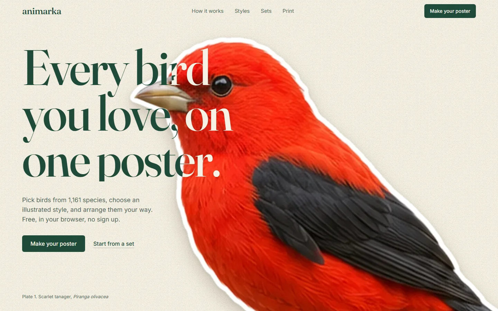
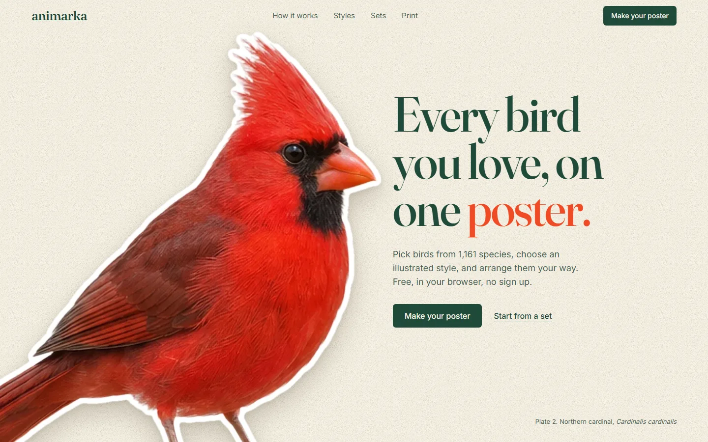
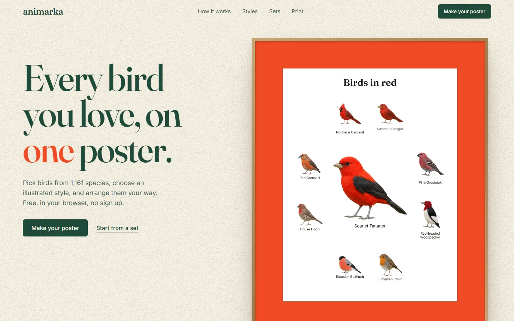
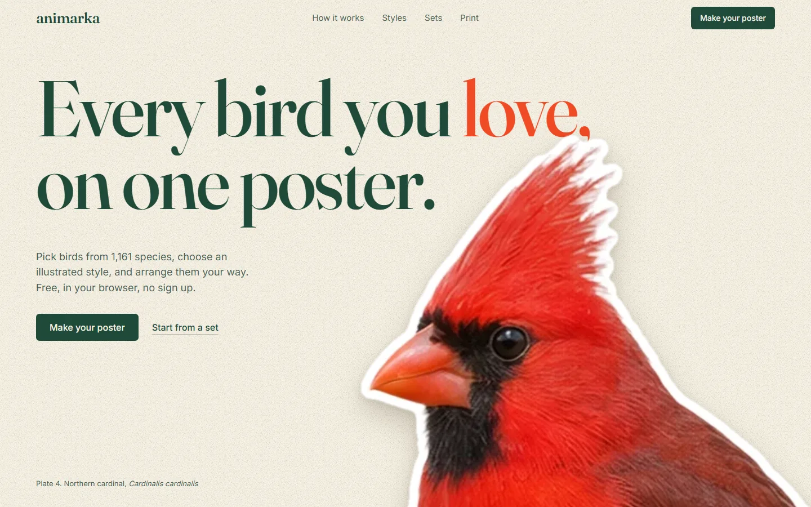
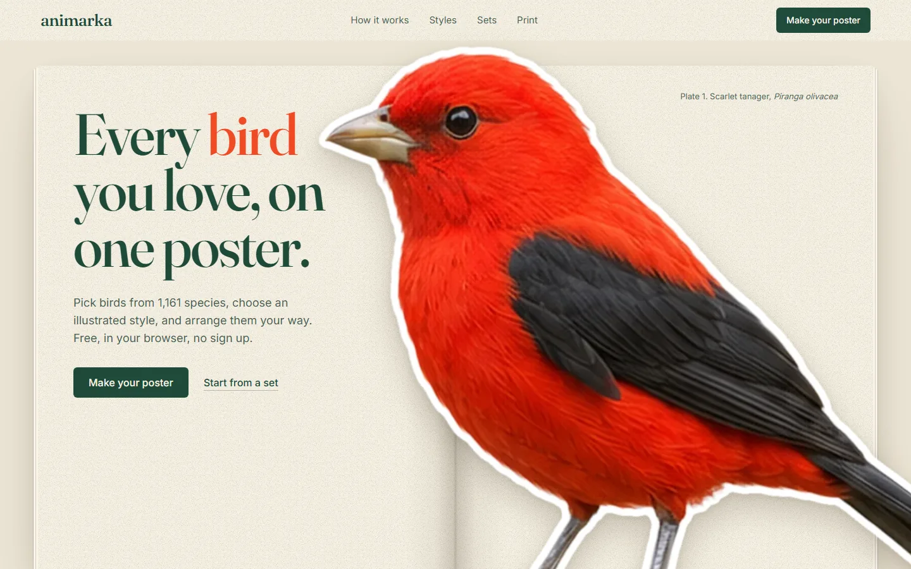
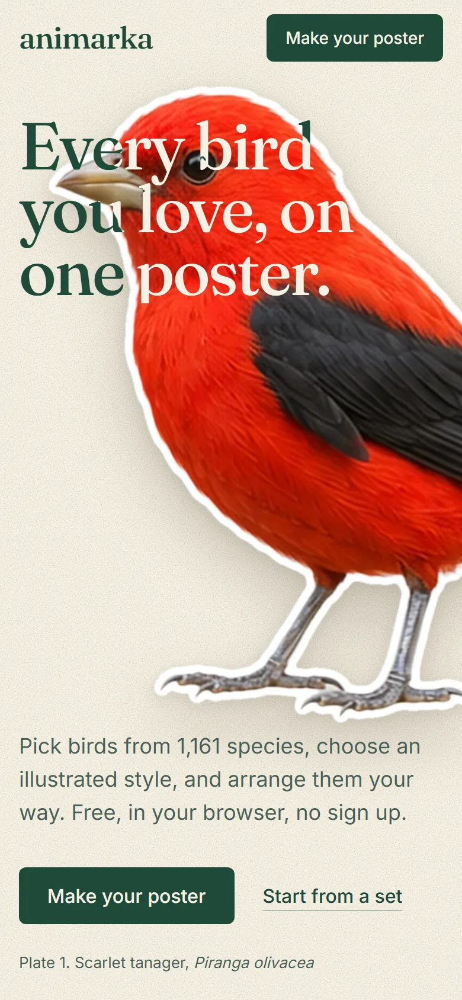
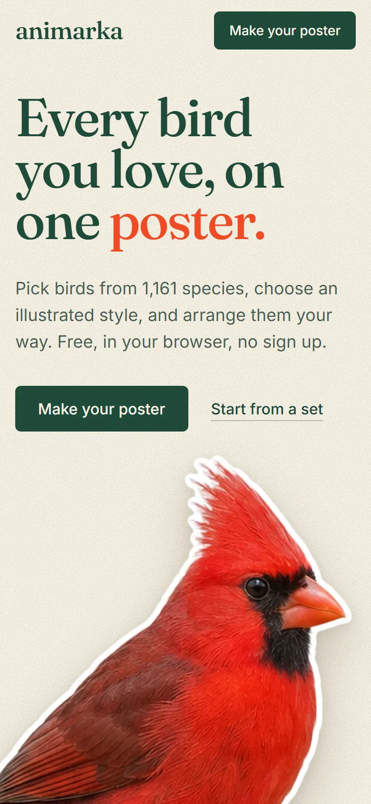
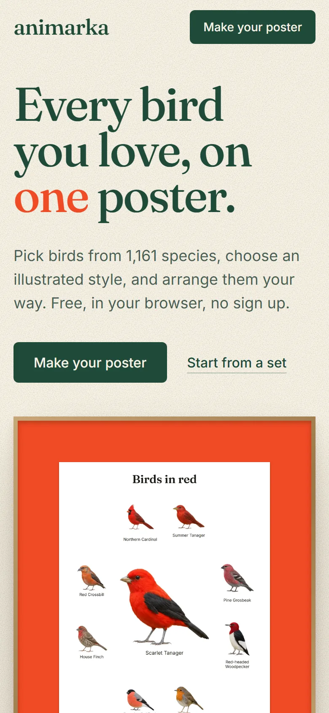
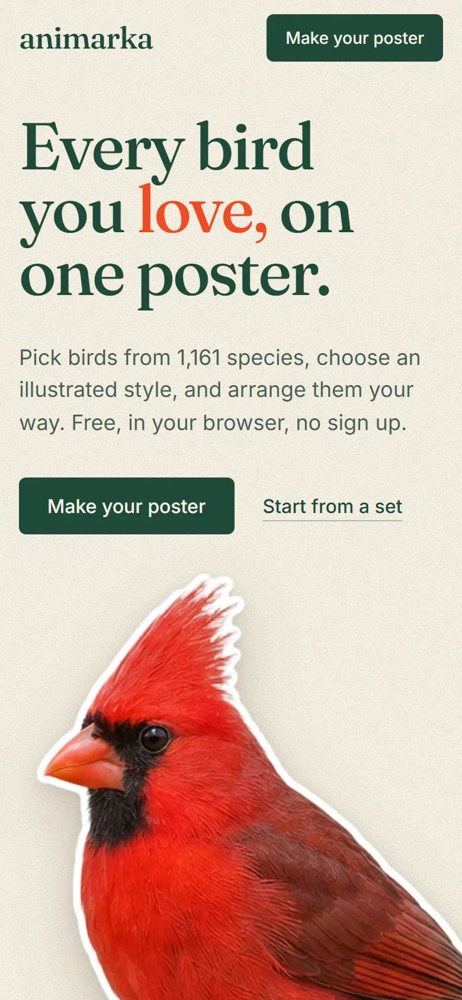
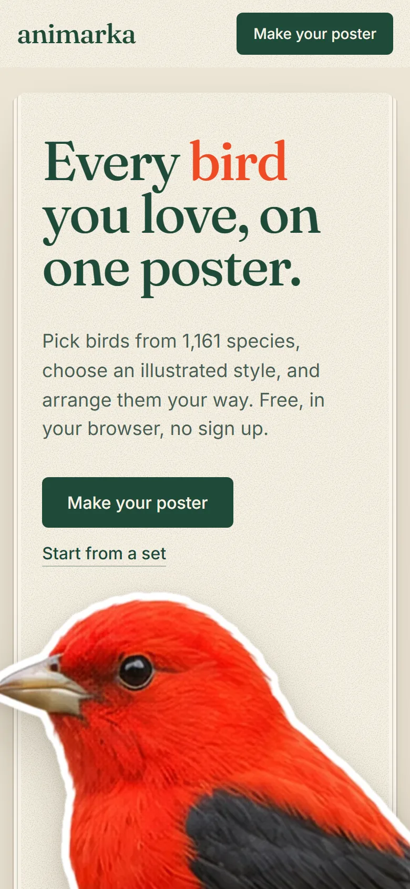

Five real first screens for the landing page, built with art from the app and the copy we already use. Desktop at 1440 px first, then the phone at 390 px. All five follow the hero rules from your brief, and the amount of vermilion is measured on each screenshot.
How to answer: reply with one code, for example H1. Add a note to change the bird, the red word or the crop. Any bird from the art set can go in any of the five layouts.
Desktop, 1440 px

H1
Knockout
Recommended
The scarlet tanager sits under a very large headline. Where the letters cross the bird they turn to paper, as if the type were cut out of the ink. Over the pale beak they stay green, so every word stays readable.
Strength
The one moment nobody else has. The words and the bird read as one image, and it carries the most red with no decoration at all.
Weakness
The bird is shown at 1.3 times its art size, so it is a little soft on retina screens. The cut needs a few lines of script to follow the bird when the window changes size.
Red
21.6% desktop, 19.3% phone
Reference: Letterform Hero on 21st.dev, huge letters as windows onto artwork. Here the letters are cut out of the art instead.
Why I recommend it: it is the unforgettable moment the brief asks for, made only from the headline and a real bird.

H2
Gaze
The cardinal, turned with the app's own mirror, fills the left side and looks straight at the headline. The word it looks at, poster, is in vermilion.
Strength
The calmest and clearest order: bird, headline, button. The bird is shown near its art size, so it stays sharp.
Weakness
One red word is the most familiar of the five ideas, so it surprises less than 1 or 5.
Red
18.5% desktop, 17.0% phone
Reference: Editorial Collage Hero on 21st.dev, two columns with a serif headline. One bird here instead of a collage.

H3
Framed print
One real poster from the builder, Birds in red, hangs in a thin oak frame with a vermilion mat and a soft shadow. The word one is in vermilion.
Strength
Shows exactly what people get. The poster is rendered at 1,600 px, so it is sharp on every screen.
Weakness
The red is mostly the mat, not a bird, and the birds on the poster are small. It is the closest to the old hero.
Red
17.0% desktop, 16.7% phone
Reference: Picture Rail Image Gallery on 21st.dev, framed prints with mats for an art print shop. One print here, with no wires or swing.

H4
Masthead
The headline runs across the top like the title of a field guide. The cardinal rises from the corner and its crest stops just under love, which is in the same red.
Strength
The biggest type of the five, with the bird and the word tied by colour and by position.
Weakness
The bird is shown at 1.5 times its art size, the softest of the five, and the red sits right at the 15% floor. On the phone the crest and the word sit apart.
Red
15.0% desktop, 16.3% phone
Reference: Editorial Image Hero on 21st.dev, a serif headline with a large image. Here the headline is set as a two line masthead.

H5
Spread
The hero is an open field guide. The tanager crosses the gutter, steps out of the top of the page, and its beak points at the word bird.
Strength
The most field guide of the five. It sets up the plates idea for the rest of the page.
Weakness
A page on the page adds a frame and a gutter shadow, so the first screen is busier. On the phone the spread becomes a single page.
Red
18.0% desktop, 16.3% phone
Reference: Book Page Curl on 21st.dev, a book that opens with a page curl. Here the spread stays open and still.
Phone, 390 px
The same five, in order. On the phone the subject sits under the words or behind them, so both buttons stay on the first screen.

H1Knockout 19.3%

H2Gaze 17.0%

H3Framed print 16.7%

H4Masthead 16.3%

H5Spread 16.3%
What all five follow
One big subject. One real bird from the field guide art set, or one real poster made in the builder. No small framed posters.
One accent. Vermilion on ivory, with deep forest type. It belongs to the subject: the bird's own red, the mat of the print, and one display word. Vermilion lives in landing tokens only, never in the builder.
Paper, not a flat colour. A fine paper grain over the ivory field.
Light frames. No frame and a soft shadow, or a thin oak frame in option 3. No black frames.
The headline reacts to the subject, in a different way in each option (last column below).
Contrast. Deep forest on ivory is 8.9:1. Vermilion is used only at display size, where 3.3:1 passes for large text, and never on buttons or small text.
Option
Red, desktop
Red, phone
Art size at 1440 px
How the headline reacts
H1 Knockout
21.6%
19.3%
1.3 times
Letters turn to paper over the bird
H2 Gaze
18.5%
17.0%
1.0 times
poster in vermilion, and the bird looks at it
H3 Framed print
17.0%
16.7%
Poster rendered at 1,600 px, sharp everywhere
one in vermilion
H4 Masthead
15.0%
16.3%
1.5 times
love in vermilion, with the crest just under it
H5 Spread
18.0%
16.3%
1.1 times
bird in vermilion, and the beak points at it
Red is the vermilion family as a share of the hero, with the top bar left out, measured with the colour analysis script on these screenshots. The brief asks for 15 to 30%. Art size is how much a bird is enlarged at 1440 px: the field guide art is about 1,024 px wide, so anything above 1 time is a little soft on retina screens.
Live samples run on the dev server at /design/hero?o=1 to o=5.
Send your pick:H? I then build it into the landing page at /, with tests at 390 and 1280, and go on with the rest of the page.